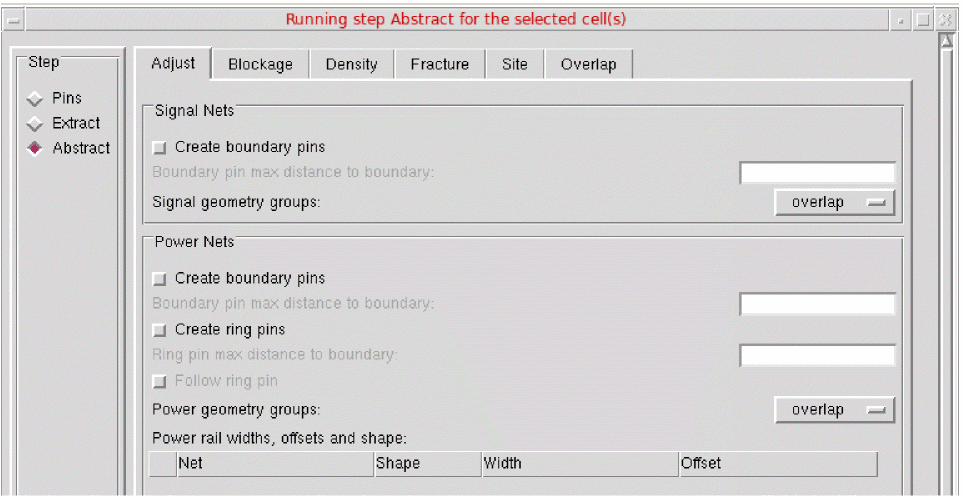
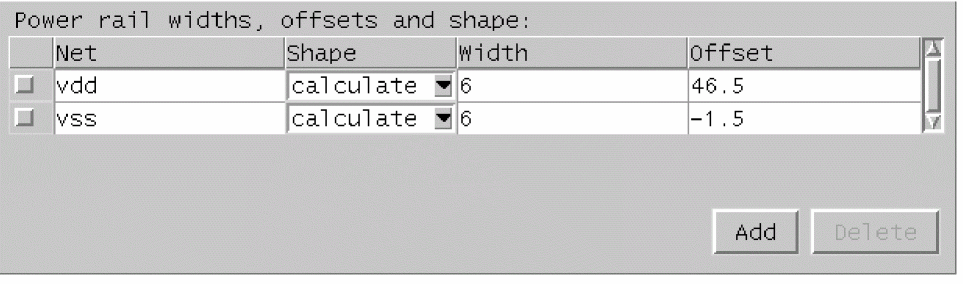

Specifying Power and Ground Rail Characteristics
To specify the characteristics of the power and ground rails for the current bin:
-
Choose Flow – Abstract. The Adjust tab is the first tab in the Running step Abstract form.
 - In the Signal Nets section, you can control how pin shapes are adjusted during connectivity extraction to create the final required pin shapes for signal nets.
- In the Power Nets section, you can control how pin shapes are adjusted during connectivity extraction to create the final required pin shapes for power nets.
- Use Power rail widths, offsets and shape to specify the characteristics of the power and ground rails for the current bin.
-
Open the Power rail widths, offsets and shape table.
The table contains a separate row for each power rail.
The Power rail widths, offsets and shape option will be unavailable if the Create ring pins option is selected. The Create ring pins option is available only if you are processing a block. - Use Net to specify the net name in this column.
- Select Shape to select from feedthru, abutment, calculate and none.
- Use Width to specify the rail width (in μ) in this column.
- Use Offset to specify the rail position (in μ) in this column.
- You can insert or delete rows from the table by selecting the appropriate button, Add or Delete.
- Check the box to the left of a row to mark it for deletion. If the table is left empty, Abstract Generator will try to determine the rail data for the Core bin, including calculating the rail and its shape. For Block and IO bins, no calculations are performed if the table is left empty. This is the default situation.
The table below describes the impact and resultant of selecting one of these values in the Shape column.
You cannot set the same power rail net more than once with different Shape values associated with it.
If the Power rail widths, offsets and shape option is set to feedthru, abutment or none, Abstract Generator will only use the specified values to set terminal properties. That is, if only one power rail net is entered into the table, that will be the only rail used to set terminal properties.
If Abstract Generator establishes that a rail can be represented by either a feedthru or an abutment rail, it will always choose the abutment shape, as shown below.
Abstract: 2001/10/31 14:51:52:
Info: Power Rail Analysis:
===============================================================================
Rails found
===============================================================================
rail type net layer width offset shape direction cells
-------------------------------------------------------------------------------
1 power vdd met1 2.5 10.87 abutment horizontal all
2 power vdd met1 5.645 7.725 feedthru horizontal all
3 ground vss met1 2.8 1.51 abutment horizontal all
4 ground vss met1 3.965 1.51 feedthru horizontal all
Abstract: 2001/10/31 14:51:52:
Info: Using power rails 1 and 3 to set terminal properties.These settings can be altered using the Adjust “Power rail widths and offsets” table.
Related Topics
Customizing Pin Shapes in Standalone Abstract Generator
Return to top